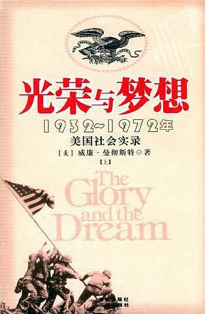

科幻小说
《奇点遗民》本书精选收录了刘宇昆的科幻佳作共22篇。《奇点遗民》融入了科幻艺术吸引人的几大元素：数字化生命、影像化记忆、人工智能、外星访客……刘宇昆的独特之处在于，他写的不是科幻探险或英雄奇幻，而是数据时代里每个人的生活和情感变化。透过这本书，我们看到的不仅是未来还有当下。

人文读物
《未来简史》未来，人类将面临着三大问题：生物本身就是算法，生命是不断处理数据的过程；意识与智能的分离；拥有大数据积累的外部环境将比我们自己更了解自己。如何看待这三大问题，以及如何采取应对措施，将直接影响着人类未来的发展。

技术参考
《利用Python进行数据分析》本书含有大量的实践案例，你将学会如何利用各种Python库（包括NumPy、pandas、matplotlib以及IPython等）高效地解决各式各样的数据分析问题。由于作者Wes McKinney是pandas库的主要作者，所以本书也可以作为利用Python实现数据密集型应用的科学计算实践指南。本书适合刚刚接触Python的分析人员以及刚刚接触科学计算的Python程序员。

历史
《光荣与梦想》本书是美国的一部断代史，勾画了从1932年罗斯福总统上台前后，到1972年尼克松总统任期内水门事件的四十年间美国政治、经济、文化，以及社会生活的全景式画卷。这是一部场景宏大，又描写细腻的历史巨著。作者对这四十年间美国历届政府从诞生到终结全过程中的两党纷争和内部分歧，对这一阶段全世界所经历的每一件大事都给予了特别的关注和叙述；同时，对这四十年间发生在全世界，尤其是与美国有关联的方方面面都给予了细致入微的刻画。从“补偿金大军”风潮、经济大萧条、总统竞选、二次世界大战、原子弹爆炸、朝鲜战争、越南战争、肯尼迪遇刺身亡、尼克松郑入水门事件，到美国人的精神风貌、社会时尚、各阶层的生活状况，再到演艺界的奇闻趣事、妇女的流行服装、青少年的时髦追求，甚至英语词汇的最新演变和人们的性观念都做了面面俱到的讲述。对于每一位读者来说，阅读此书是从本质上深刻了解美国的最简单、最有效的方法。 本书在1979年曾由商务印书馆出版发行过，它的面世在当时及以后的漫长岁月里曾在中国读者中引起过较好的反响，甚至对一大批中国记者的写作都产生了极大的影响。
